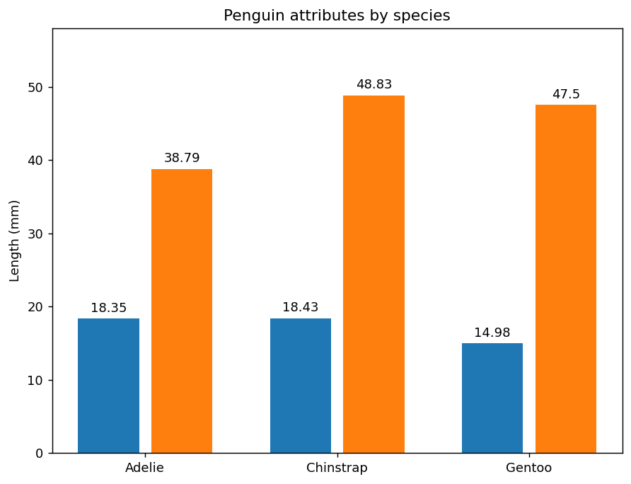

PatternMonster provide a greate collection of patterns in svg format. mpl-pe-pattern-monster is a package that lets you use these patterns in matplotlib. The original svg files are converted to matplotlib path definitions and included as a numpy array.
This tutorial will provide a simple example of barchart with christmas-related patterns.
We start from a simple barchart Adopted from https://matplotlib.org/stable/gallery/lines_bars_and_markers/barchart.html
import matplotlib.pyplot as pltimport numpy as npspecies = ("Adelie", "Chinstrap", "Gentoo")penguin_means = {'Bill Depth': (18.35, 18.43, 14.98),'Bill Length': (38.79, 48.83, 47.50),}x = np.arange(len(species)) # the label locationstotal_width =0.7# total width of the groupdw =0.2# fraction of space between bars in the same groupwidth = total_width / (len(penguin_means) + dw * (len(penguin_means) -1))fig, ax = plt.subplots(num=1, clear=True, figsize=(8, 6))for i, (attribute, measurement) inenumerate(penguin_means.items()): offset = width * (1+ dw) * i rects = ax.bar(x -0.5* total_width + offset, measurement, width, label=attribute, align="edge") ax.bar_label(rects, padding=3)# Add some text for labels, title and custom x-axis tick labels, etc.ax.set_ylabel('Length (mm)')ax.set_title('Penguin attributes by species')ax.set_xticks(x, species)ax.set_ylim(0, 58)
''

Now we add Christmas patterns from pattern.monster.
# First, you need to know the names of the patterns you are going to use.# The python package itself does not provide a good way to browse the patterns.# You can list the names of patterns bypm.names[:10] # We only show the first 10 items.
# names are categorized by roots and tagspm.roots # outputs are suppressedpm.tags # outputs are suppressed
For now, best way to browse patterns is to visit pattern.monster
Now, let’s apply the patterns
The python package only contains path definition, not colors. And you need to provide suitable colors for your pattern.
If color_cycle is not specified, the default color cycle of [“C0”, “C1”, …] will be used.
If the given color_cycle contains None, it will be interpreted as the facecolor of the parent artist.
Note that patterns of pattern_monster are rendered using the custom patheffects. If you are not familiar with patheffect, take a look at patheffects-guide
The code below uses mpl-visual-context, but I won’t go into details for its use for now.
# pattern names, colors and scale factor. Note that all the pattern names in the python package is in lower-case.# The colors also from pattern.monster's pallette, that I think go well with the christmas.patterns = [("christmas-tree-1", ["#009688", "#E91E63", "#03A9F4", "#ECC94B"],1), ("christmas-pattern-2", ["#F6AD55", "#E91E63", "#03A9F4"],1.5)]for bars, slug_colors_scale inzip(ax.containers, patterns): slug, colors, scale = slug_colors_scale pattern = pm.get(slug, scale=scale) # we get the pattern instance using its name, a scale factor. pattern_fill = pattern.fill(ax, color_cycle=colors, alpha=0.5)# its 'fill' method with return patheffect instance. path_effects = [ pe.FillColor(colors[0]) | pe.GCModify(alpha=0.3), # Change the fill color and set alpha to 0.3 pe.StrokeColor(colors[0]) | pe.GCModify(linewidth=2, alpha=0.5) | pe.StrokeOnly(),# Change the stroke color, set linewidth and alpha, and only stroke (no fill) pattern_fill # now fill the bar with patterns. ]for patch in bars: patch.set_path_effects(path_effects)ax.legend(loc='upper left', ncols=1, handleheight=3., handlelength=3.)